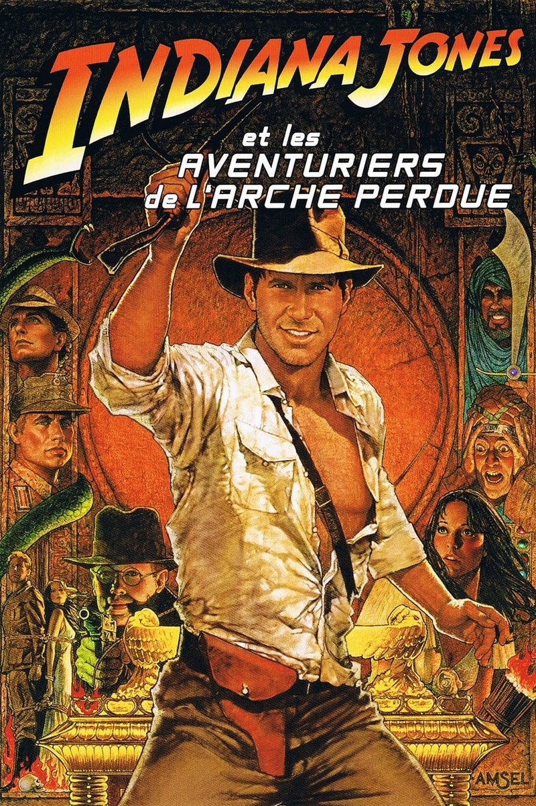
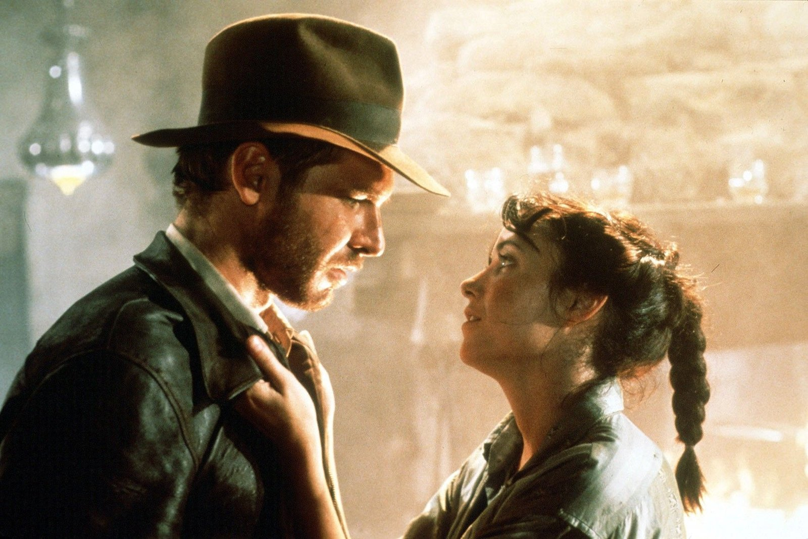

J'avais huit ans. C'était un soir de réveillon, chez mon arrière-grand-mère.
Dans la salle à manger, les adultes faisaient la fête : mes parents, mes grands-parents, les verres qui tintaient, les rires qui montaient jusqu'au salon. Moi, j'étais devant la télévision. Sur TF1, Indiana Jones et la Dernière Croisade.
Je ne connaissais rien de ce héros. Ni le chapeau, ni le fouet, ni la musique. Je le rencontrais par la fin de l'histoire, sans savoir qu'il y avait eu deux films avant.
Et puis il y a eu les épreuves. Le Graal au bout du chemin, et ce premier piège, invisible, où un homme avance trop vite et perd la tête. Littéralement. Seul devant l'écran, pendant que la fête continuait à côté, j'ai senti mon cœur s'arrêter. Cette image ne m'a jamais quitté.
Cette nuit-là, j'ai rencontré Indiana Jones. Il m'a fallu remonter le temps pour comprendre d'où il venait.
Ce soir, on retourne au début. 1936, une jungle d'Amérique du Sud, une idole en or, et un rocher qui roule.

Les Aventuriers de l'arche perdue — affiche de Richard Amsel, 1981
Les Aventuriers de l'arche perdue.
Réalisé par Steven Spielberg. Avec Harrison Ford, Karen Allen, Paul Freeman et John Rhys-Davies.
George Lucas a eu l'idée du personnage et produit le film avec sa société Lucasfilm. Le scénario est signé Lawrence Kasdan, d'après une histoire de Lucas et Philip Kaufman, et la musique John Williams. Le film sort aux États-Unis en juin 1981 avec un budget d'environ 18 millions de dollars. C'est le plus gros succès de l'année au box-office.
Huit nominations aux Oscars, dont celle du meilleur film, et cinq statuettes, notamment pour le montage, les effets visuels et le son.
1936. Indiana Jones est professeur d'archéologie à l'université, et aventurier dès qu'il quitte la salle de cours. Les services secrets américains le chargent de retrouver avant les nazis l'Arche d'alliance, le coffre qui contiendrait les Tables de la Loi et qu'Hitler rêve de posséder.
Du Népal au Caire, des temples piégés aux convois militaires, un chapeau, un fouet et une seule règle : ne jamais s'arrêter.
Lucas et Spielberg voulaient retrouver le frisson des feuilletons d'aventure de leur enfance. Ils ont inventé l'un des plus grands héros du cinéma.
Tout commence sur une plage d'Hawaï, en mai 1977. George Lucas s'y est réfugié pour échapper à la sortie de La Guerre des étoiles, persuadé que le film va être un échec. Steven Spielberg le rejoint. Il lui confie son rêve : réaliser un James Bond. Lucas lui répond qu'il a mieux.
Depuis plusieurs années, il travaille sur un personnage d'archéologue aventurier inspiré des serials qu'il regardait enfant : ces feuilletons des années 30 et 40, projetés en épisodes avant le film principal, où chaque chapitre se terminait sur le héros en danger de mort. Avec le cinéaste Philip Kaufman, il a trouvé l'objet de la quête : l'Arche d'alliance. Le héros s'appelle alors Indiana Smith, et c'est Spielberg qui fera changer le nom de famille. Indiana, c'était le nom du chien de Lucas.
Le projet fait peur aux studios. Lucas impose des conditions très favorables pour lui, et la plupart refusent. Paramount accepte.
Spielberg, lui, a quelque chose à prouver. Son film précédent, 1941, a dépassé son budget et déçu au box-office. Pour Les Aventuriers, il s'engage à tourner vite et à ne pas dépasser le budget. Il tient parole.
Pour le rôle d'Indiana Jones, le premier choix est Tom Selleck. Mais il est lié par contrat à la série Magnum, et la chaîne CBS refuse de le libérer. Spielberg pense alors à Harrison Ford, que Lucas hésite à engager une troisième fois après American Graffiti et La Guerre des étoiles. Ford obtient le rôle quelques semaines avant le tournage.
Le tournage se déroule en 1980 : la base sous-marine de La Rochelle, la Tunisie, les forêts de Kauai à Hawaï et les studios d'Elstree en Angleterre. En Tunisie, la chaleur et la dysenterie frappent l'équipe. Ford, malade, n'a pas la force de tourner le long combat prévu contre un spadassin au sabre. Il propose de régler l'affaire d'un coup de revolver. La scène devient l'une des plus célèbres du film.
Pour le Puits des âmes, l'équipe réunit des milliers de serpents. Harrison Ford partage alors la phobie de son personnage.

Indy et Marion, les retrouvailles au Népal
1936, quelque part dans la jungle du Pérou.
Indiana Jones s'enfonce dans un temple oublié pour s'emparer d'une idole en or. Il déjoue les pièges un à un, mais à la sortie l'attend René Belloq, archéologue français sans scrupules et son rival de toujours. Indy repart les mains vides, avec juste assez d'avance pour sauver sa peau.
De retour aux États-Unis, il retrouve sa vie de professeur. Jusqu'à la visite de deux agents des services de renseignement de l'armée. Des messages interceptés révèlent que les nazis fouillent le désert égyptien, sur le site de l'antique cité de Tanis. Ils cherchent l'Arche d'alliance, et avec elle un pouvoir que personne ne devrait posséder.
Pour la localiser, il faut une pièce bien précise : le médaillon qui orne le bâton de Râ. Sa trace mène à Abner Ravenwood, l'ancien mentor d'Indy.
La route passe d'abord par le Népal, dans un bar perdu dans la montagne. Là, Indy retrouve Marion, la fille d'Abner, qu'il a connue autrefois et qui ne lui a jamais pardonné. Elle garde le médaillon. Et elle n'est pas la seule à le chercher.
Puis vient Le Caire, ses ruelles, ses marchés et ses espions. Indy y retrouve son ami Sallah, un pas d'avance sur l'ennemi, puis un pas de retard.
Une course contre la montre entre un homme seul, une femme qui a du répondant, et une armée qui veut l'objet le plus sacré de l'histoire.
Les Aventuriers de l'arche perdue tient sur une idée simple : reprendre les serials de l'enfance, ces petits films bricolés pleins de pièges et de cascades, avec les moyens et le savoir-faire du grand cinéma hollywoodien.
Le résultat est une machine à rythme. Le film enchaîne les morceaux de bravoure presque sans pause : le temple péruvien, le bar en flammes au Népal, la poursuite dans les rues du Caire, le Puits des âmes, la chasse au camion dans le désert. Chaque séquence pourrait conclure un autre film. Ici, elle relance simplement la suivante. Spielberg filme l'action avec une lisibilité rare : on sait toujours où sont les personnages, ce qu'ils risquent, et comment ils vont tenter de s'en sortir.
Car Indiana Jones n'est pas un surhomme. Il prend des coups, se trompe, a peur des serpents, et improvise quand son plan s'écroule, ce qui arrive souvent. Harrison Ford lui donne une ironie, une fatigue et une humanité qui le rendent immédiatement attachant. On ne l'admire pas seulement parce qu'il gagne. On l'aime parce qu'on le voit souffrir pour y arriver.
En face, Marion Ravenwood n'a rien d'une demoiselle en détresse. Elle tient un bar, boit plus que ses clients et répond coup pour coup. Karen Allen en fait une partenaire à part entière, et l'un des plus beaux personnages féminins du cinéma d'aventure.
Le film a aussi une signature visuelle forte. Le directeur de la photographie Douglas Slocombe sculpte l'ombre et la lumière comme dans les films des années 40 : la silhouette du chapeau sur un mur suffit à présenter le héros. Les cascades sont réelles, les décors construits, la poussière bien là. Rien n'a vieilli, parce que tout a été filmé pour de vrai.
Et puis il y a la musique. La marche de John Williams est devenue l'un des thèmes les plus reconnaissables de l'histoire du cinéma. Quelques notes suffisent pour retrouver le chapeau et le fouet.
Enfin, le film ose un final surnaturel, presque biblique, qui tranche avec le réalisme des cascades. Il rappelle que derrière l'aventure se cache une vieille peur : celle des objets qu'il vaut mieux ne jamais ouvrir.

Le temple du Pérou : l'idole en or
Parce qu'il a inventé un héros qui n'existait pas, et que tout le monde a voulu imiter.
Le succès est immédiat. Plus gros succès de l'année 1981, cinq Oscars, une ressortie en salles dès l'année suivante. Le film rassemble tous les publics : les enfants y voient une aventure, les adultes un hommage au cinéma de leur jeunesse, et les cinéphiles une leçon de mise en scène.
Surtout, Indiana Jones devient tout de suite une icône. Le chapeau, le blouson de cuir, le fouet, la sacoche en bandoulière : une silhouette reconnaissable entre mille, aussi forte que celle de James Bond, le héros que Spielberg rêvait de filmer. Lucas et Spielberg ont inventé un mythe moderne avec des éléments empruntés au passé.
Le film change aussi le cinéma d'aventure. Dans les années qui suivent, les imitations se multiplient : À la poursuite du diamant vert, Allan Quatermain et les Mines du roi Salomon, et une foule de séries B lancées sur la piste du trésor. Bien plus tard, les jeux vidéo Tomb Raider et Uncharted reprendront la même formule : un aventurier, des ruines piégées, une course contre des ennemis mieux armés.
Puis la saga s'installe. Deux suites dans les années 80, une série télévisée dans les années 90, des attractions dans les parcs, des jeux. Chaque nouvelle génération découvre le personnage par une porte différente.
Et il y a la télévision. Comme tant d'enfants de l'époque, beaucoup ont rencontré Indiana Jones lors d'une diffusion en prime time, un soir de fête ou de vacances. Rediffusé encore et encore, le film est entré dans les familles. On le connaît par cœur sans se souvenir de la première fois.
En 1999, la Bibliothèque du Congrès l'inscrit au registre national des films américains, parmi les œuvres à préserver pour leur importance culturelle. Une consécration officielle pour un film né d'une conversation sur une plage.
Parce que c'est un film qui ne vieillit pas, et c'est rare.
Plus de quarante ans après sa sortie, il garde la même énergie. Pas un plan de trop, pas une scène qui traîne. Le film ouvre sur une séquence d'action et ne ralentit presque plus jusqu'au générique de fin. Beaucoup de films d'aventure récents durent une heure de plus pour en raconter moitié moins.
Parce que tout y est vrai. Les cascades sont faites par des hommes, les poursuites tournées en plein désert, les serpents bien vivants. Cette matière physique se sent à l'écran. Quand Indy est traîné sous un camion, on a mal pour lui.
Parce que, pour ceux qui ont rencontré Indiana Jones avec La Dernière Croisade ou Le Temple maudit, revenir au premier film permet de voir le personnage naître. Il est plus sec, plus rude, moins sympathique parfois. Le mythe n'est pas encore installé, et c'est ce qui le rend passionnant.
Parce que Marion Ravenwood mérite d'être redécouverte. Ni faire-valoir ni victime, elle est l'égale du héros, et souvent sa meilleure alliée.
Et parce que c'est un film qui se partage. Les enfants y voient une aventure, les parents un souvenir, et tout le monde sursaute au même moment. Restauré en haute définition, il retrouve toute la richesse de ses images, la lumière dorée du désert et la noirceur du Puits des âmes.
Certains héros, on les rencontre dans l'ordre. D'autres, on les croise par hasard, au milieu de l'histoire, un soir où personne ne fait attention à nous.
Indiana Jones, je l'ai rencontré un soir de réveillon, chez mon arrière-grand-mère, pendant que les adultes riaient dans la pièce d'à côté. C'était le troisième film, la fin de l'aventure, et je ne le savais pas. Pour moi, c'était le début.
Il m'a fallu remonter le temps pour trouver la véritable origine : une jungle du Pérou, une idole en or, un rocher qui dévale un tunnel et un homme qui court plus vite que son destin. Tout y était déjà : le chapeau, le fouet, la peur des serpents, et cette façon de se relever après chaque coup.
Les Aventuriers de l'arche perdue est né du rêve de deux amis qui voulaient retrouver les films de leur enfance. Il est devenu, à son tour, le film d'enfance de plusieurs générations.
Ce soir, on ouvre la trilogie par le commencement. Le reste viendra en son temps.
La cassette est dans le lecteur. On rembobine.
Titre original
Raiders of the Lost Ark
Pays
États-Unis
Genre
Aventure / Action
Durée
115 min
Producteur
Lucasfilm · Paramount Pictures
Avec aussi
Paul Freeman · John Rhys-Davies · Denholm Elliott
Musique
John Williams
Fil conducteur
Trilogie Indiana Jones — Le commencement
SOMEDAY — TRILOGIE INDIANA JONES EP. 01